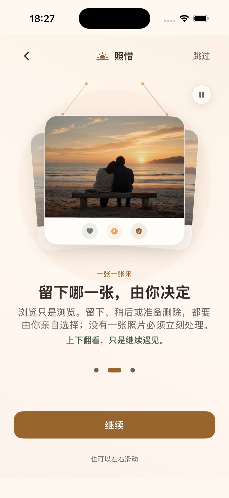
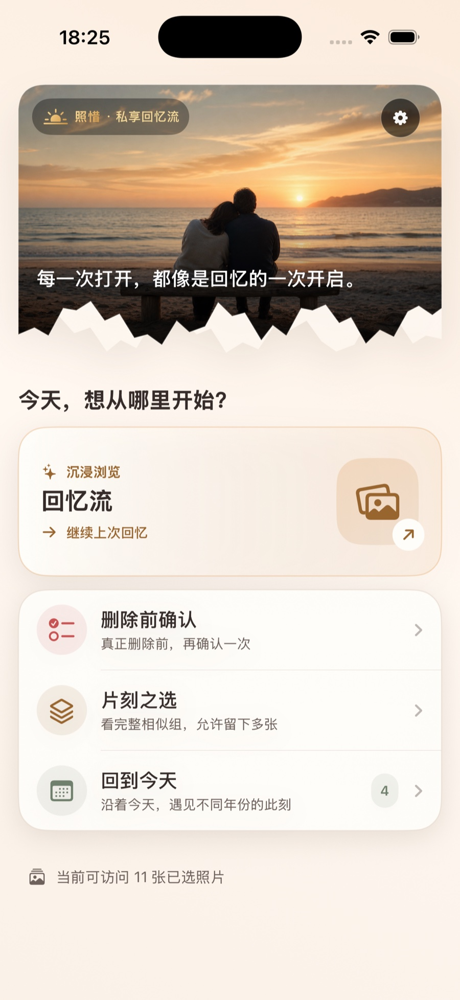
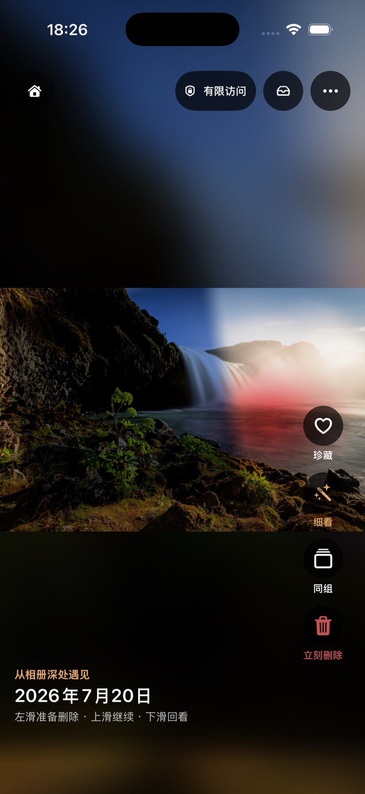
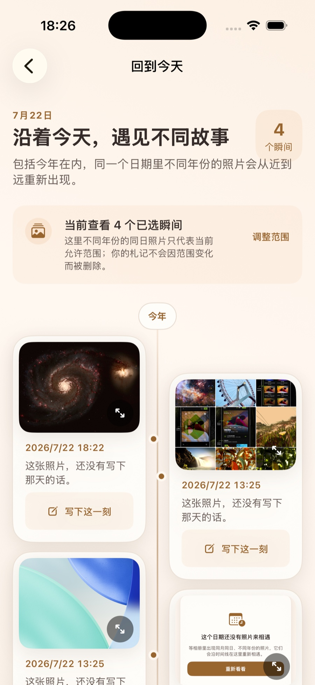
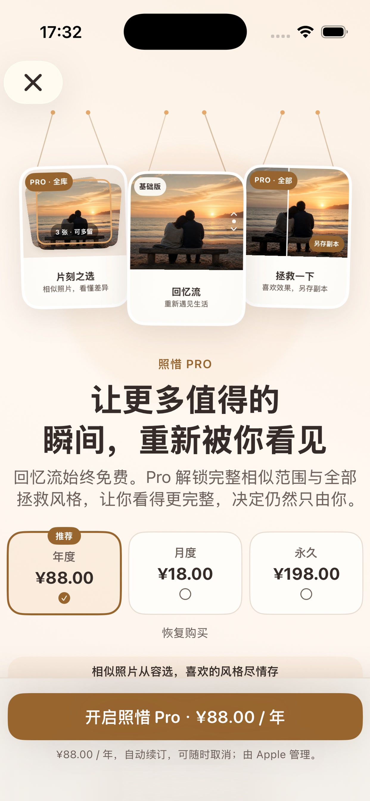

重新遇见
私享回忆流与照片拯救
刷自己的生活，
惜下值得的瞬间。
照惜不是催你清空相册的工具。它让那些拍完就沉入图库的照片重新出现，也把判断、拯救与删除前确认，放进一段更轻松的回忆里。
App ID 6792201710 · 产品页公开后，此链接将直接进入下载页
- 照片处理在设备上完成
- 无需注册账号
- 删除前由你再次确认


当前版本真实界面
重新看见，而不是完成任务
你的相册里，不只有要整理的照片。
还有值得再见一次的生活。
照惜借鉴熟悉的低摩擦浏览节奏，但不加入公开社交、点赞压力或必须处理完的进度。你可以只看一会儿，也可以在想做决定时再行动。
回忆流 · 重新遇见
照片先铺满眼前，
工具退到需要时再出现。
上下滑动只负责继续遇见，绝不偷偷替你做去留决定。喜欢时可以珍藏、细看或进入同组；不想处理，也可以只是看一会儿。
- 浏览与决定完全解耦
- 有限照片访问也能安心使用
- 立刻删除仍需系统确认


回到今天 · 时间回声
同一天，
生活已经写了很多年。
沿着年份重新遇见同月同日的照片。你还可以在某一刻旁边写下一条只保存在设备上的札记，让当时没说完的话继续留在回忆里。
“沿着今天，遇见不同故事。”
四条温暖主线
从打开回忆，到安心留下
每条体验都有清楚的目的，但决定始终掌握在你手里。
看懂差异
片刻之选
从完整相似组里慢慢比较。可以留下一张，也可以承认每张都各有各的好。再看一眼
删除前确认
“准备删除”只是本地草稿。真正删除前仍会集中复核，并由 iOS 系统再次确认。时间回声
回到今天
沿着年份重新遇见同月同日的照片，还能在回忆旁留下只属于自己的札记。
真实 App 界面 · 照惜 Pro
基础体验始终完整
喜欢的风格尽情存，
但安全能力不设门槛。
免费基础版保留浏览、去留、删除前复核、撤回和基础拯救闭环。照惜 Pro 解锁更完整的相似分析范围与全部已准入拯救风格。
- 基础版完整回忆流与照片安全动作
- 照惜 Pro完整相似范围与更多拯救风格
- Apple 管理购买、续订、恢复与退款均由 Apple 处理
照惜 · iPhone
把自己的生活，重新刷回来。
照惜已进入上架准备阶段。App Store 产品页公开后，下方链接将直接进入下载页面。
App Store即将上线apps.apple.com/app/id6792201710